| Oktober 2002 |
| tema: Prostitution |
| Photos of Puta & Johnny Warehouse by: Knud Vesterskov. |
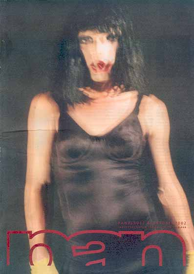
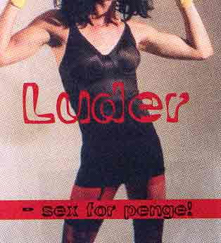 |
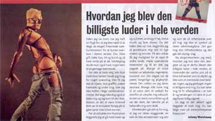
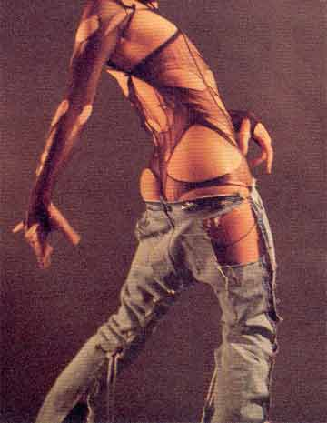 |
| The Pan magazine was this month about prostitution. These are articles
about subjects that has to do with that. Among others there were photos of Puta & Johnny Warehouse's low-priced body put in as decoration. One article, is the autobiography of Johnny Warehouse with the headline; How I became the cheapest whore in the whole wide world. It goes like this: Since childhood I have been afraid that in order to survive in this world I had to follow the square society norms, which were to get married, buy a house, car, and a dog and then just wait to die. Of course you also have to have some children of your own in order to repeat the pattern. I needed some excitement so I wouldn't bore myself to death. I got that by stealing, indulging in writing graffiti, committing wanton acts of destruction of property and other things the norms wouldn't allow you to do. One day I came to the conclusion that being criminal was just an unsuccessful attempt of rebelling against the norms. To express my frustration I started wearing make-up and avant garde, androgynous clothes, write music and make shows. When even that wasn't enough I began to prostitute myself to rich men and women. So I could have the opportunity to travel to exciting places, meet exciting people and get everything I desired. Many of my costumers were lawyers, engineers, accountants, etc. During the day they were neat, respectable and devoted to their duty. At night I was their sex slave. A lot of them wanted me to abuse them verbally and then take advantage of them sexually. Others were more romantic and then there were those who got a kick out of treating me like dirt. Eventually I realized that I was their dark side, a side they didn't accept in themselves which they were now superimposing on me. I became a symbol of their self denial. It gave me great pleasure and it still does today. Now I'm experimenting on how I can go even further and that's why I became the cheapest whore in the whole wide world, a person who appreciates to be treated as an object and not as a human being with sensitive feelings and emotions. Noone, and I repeat, noone is cheaper than me. You can buy me for free use for a whole year and the payment will be one blow of smoke from a cheap cigaret. Johnny Warehouse |
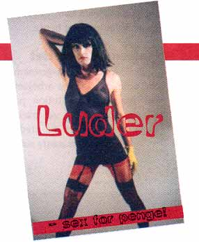
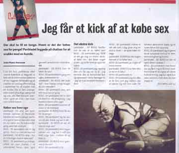
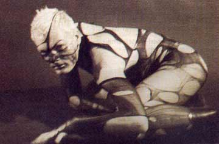
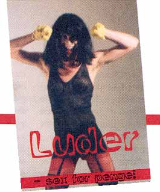
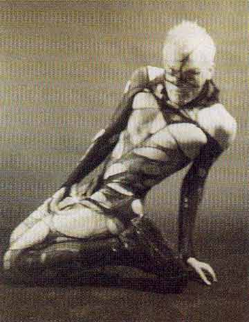
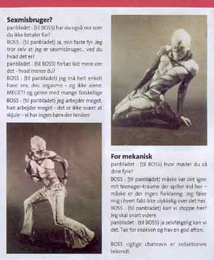
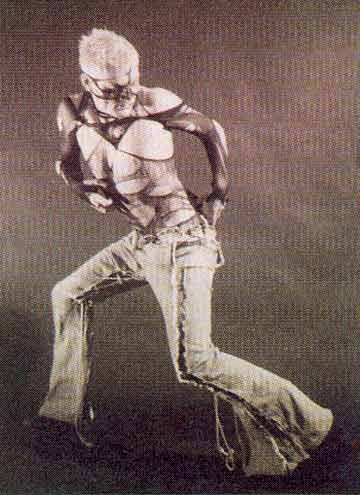
Reference: www.panbladet.dk |
Print denne side